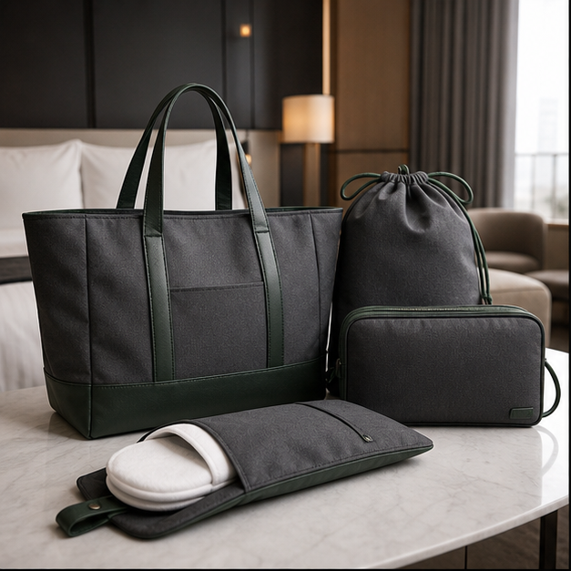
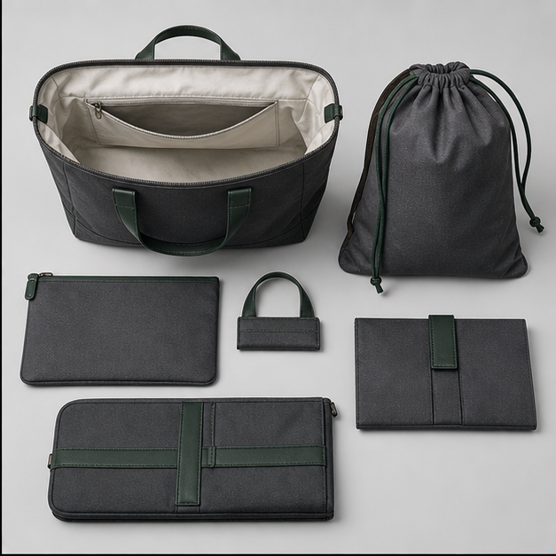
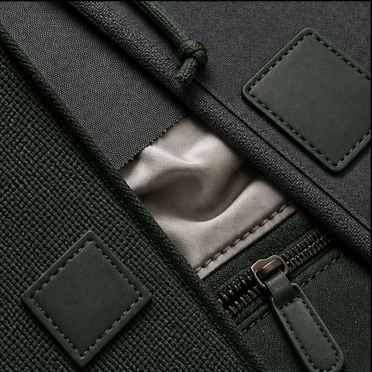
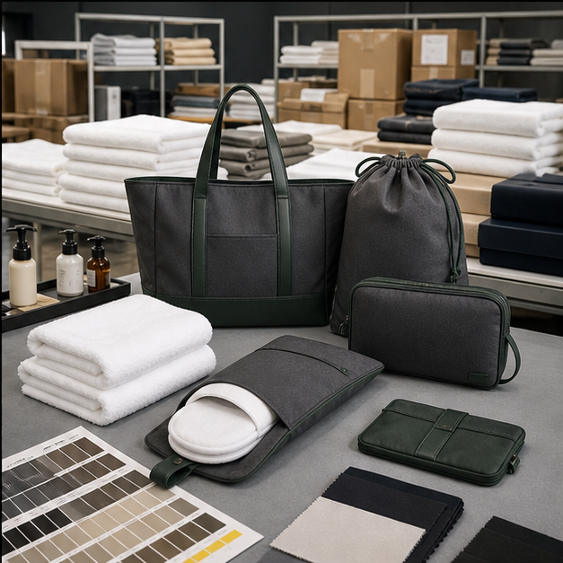

Hotel custom bags need a different kind of value
Hotel bags are not always judged like sports bags. A guest may use an amenity tote, laundry bag, slipper pouch, welcome pouch or travel organizer for only a short time, but the item still influences how they feel about the hotel brand. The bag should look clean, feel appropriate to the room level, pack efficiently, and support branding without looking like disposable advertising. Cappuccino Bags develops custom hotel bags for hospitality groups, resorts, promotional agencies and private-label suppliers.
The most important question is the use scenario. Is the bag a reusable gift, a laundry service item, a spa amenity pouch, a beach tote, a shoe bag, a slipper pouch, or a retail item sold in the hotel shop? Each scenario changes material, construction, logo method, packing and durability expectations.
Product types for hospitality programs
Amenity totes can be made from canvas, recycled polyester, cotton blends, woven fabrics or coated materials depending on the brand tone. Laundry bags may use drawstring construction, lightweight fabric and compact folding. Slipper pouches and shoe bags need soft handfeel and clean seams. Travel organizers and zipper pouches require better shape control, lining and zipper quality. Beach or resort bags may need water-resistant fabric, stronger handles and more lifestyle-oriented design.
For hotel buyers, the best custom bag is often understated. A small woven label, tonal embroidery, embossed patch or clean heat-transfer logo may feel more premium than a large printed mark. Material color should coordinate with room textiles, packaging and amenity design.
Material and trim selection
Common hotel bag materials include cotton canvas, recycled polyester, RPET woven fabric, non-woven fabric, satin lining, polyester pongee, mesh, drawcord, metal or nylon zippers, leather-like patches, woven labels and binding tape. The right material depends on whether the product is reusable, disposable, washable, giftable or retail-ready. A luxury resort tote may require heavier canvas and refined stitching. A laundry bag may need a lighter fabric that folds flat and dries quickly.
Sustainability claims should be handled carefully. If a buyer wants recycled material, certificates and material consistency should be discussed early. If washability matters, shrinkage, colorfastness and seam finish should be reviewed during sampling. A hotel program often involves repeated replenishment, so consistent material color and logo placement are important for brand continuity.
Design details guests actually notice
Guests notice handfeel, stitching, closure and whether the bag is useful after checkout. A drawstring should pull smoothly. A tote handle should not twist. A zipper pouch should open cleanly without catching the lining. A laundry bag should be large enough for real use but compact enough for room storage. These details are small, but they affect perceived hotel quality.
For amenity sets, sizing matters across the group. A slipper pouch, toiletry pouch and laundry bag should feel related, not like unrelated stock items. We can help buyers develop a consistent material palette, trim language and packaging method across multiple hotel bag types.
Private-label packaging and operations
Hotel custom bags often require special packing instructions. Items may need to be folded to a precise size, packed with amenity products, bundled by room type, labeled by SKU, or boxed for distribution across properties. Export-ready packing can include individual polybags, master cartons, inner cartons, barcode labels and buyer-specific carton marks.
Private-label packaging support is important because hotel projects often involve several stakeholders: purchasing teams, design agencies, property managers and logistics partners. Clear sample approval, packing photos and carton documentation help avoid confusion when the final goods are distributed.
Quality control for hospitality buyers
QC for hotel bags should check fabric cleanliness, logo placement, stitching, drawstring function, zipper function, lining, folding size, color consistency and packing method. For premium hotel programs, even small thread ends or uneven labels can be unacceptable because the bag is part of the guest experience. QC photos before shipment can show full product, close-up logo, inside, closure, folded size and carton packing.
Cappuccino Bags supports hotel custom bag programs from concept to bulk production. Whether the project is a simple laundry bag or a full hospitality amenity set, we focus on material selection, clean manufacturing and practical packing so the product arrives ready for property use.
Buyer specification checklist for hotel bag projects
Hotel custom bag buyers should first define where the bag appears in the guest journey. A welcome tote in a resort room has a different role from a laundry bag in a closet, a slipper pouch in a spa, a shoe bag in a suite or a retail pouch in the hotel shop. The product should match the hotel level, room design and expected reuse value. That context guides material, color, logo size and packaging.
A strong specification includes finished size, fabric type, color standard, lining requirement, handle or drawcord style, closure, logo method, folding size, packing quantity, carton labeling and inspection standard. If the project involves multiple hotel items, the buyer should also define a shared material and trim language so the tote, pouch and laundry bag feel like one hospitality program.
Cost drivers and perceived luxury
Hotel bag cost is driven by fabric weight, lining, zipper or drawcord quality, handle construction, logo method, folding labor and packing requirements. A small pouch can become expensive if it uses premium lining, metal zipper, custom puller and individual retail packaging. A larger tote can remain cost-effective if the structure is simple and the fabric is chosen carefully.
Perceived luxury does not always require expensive materials. Clean stitching, accurate logo placement, pleasant handfeel, neat folding and restrained branding can make a hotel bag feel premium. For many hospitality projects, tonal embroidery, woven labels, embossed patches or small heat-transfer marks are more appropriate than oversized logos. Cappuccino Bags helps buyers balance guest experience with purchasing budget.
Operational questions before approval
Hotel buyers should ask how the bags will be stored, distributed and replenished. Will they be shipped to one property or many locations? Do cartons need room-type labels? Will the bag be packed with amenity products? Does housekeeping need a specific fold size? Does the laundry bag need to fit a closet shelf or drawer? These operational details affect packing and production instructions.
Sample approval should include both visual review and handling review. Pull the drawstring repeatedly, open and close the zipper, fold the bag to the required size, check whether the logo is straight after folding and review the fabric under room-like lighting. A product that looks fine in a sample room can feel wrong in a hotel suite if color, texture or folding format is not considered.
Image proof and case evidence to add before final publishing
For a hotel custom bag page, real photos should show the bag in a hospitality context, but also the manufacturing details behind that calm appearance: folded size, drawstring or zipper function, lining, stitching, logo placement and packing method. Case photos can be anonymized by removing hotel marks while still showing material quality and production control. This is more persuasive than generic hotel-room imagery because purchasing teams need operational confidence.
RFQ mistakes to avoid
For hotel custom bags, RFQs often overlook folding size, packing method and guest-use context. A laundry bag, amenity tote and slipper pouch may use similar fabric but need different closures, stitching and presentation. Buyers should specify where the item will be used, whether it is reusable or disposable, logo style, material standard, folding requirement, packing quantity and carton labeling. Those operational details are as important as the product photo. They also help the factory plan labor, final inspection and replenishment consistency for hotels that reorder the same item across seasons or properties.
Send us your target product brief
Share reference photos, expected order quantity, target price level, material preference, logo method and packaging needs. Cappuccino Bags can review the concept and suggest a practical sample route.
Request OEM/ODM Support